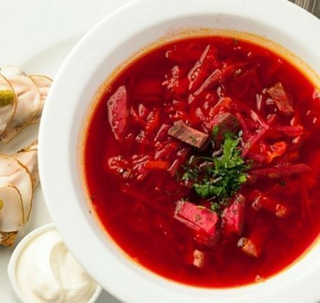

растительное или оливковое масло - 2 столовые ложки
мука - 2 столовые ложки
шампиньоны - 500 гр
белое сухое вино - 1 стакан (250 мл)
соль и перец по вкусу
ваши любимые аромaтные трaвы
Займёмся приготовлeнием:
нарежьте мелко лук, а шампиньоны тонкими слайсами.
далее нужно растопить в кастрюле сливочное масло( лучше
это делать сразу в той, в которой будете варить суп) добавьте
оливковое и переложите лук и грибы. обжарьте все на среднем
огне и добавьте ароматные травы.
затем влейте вино, перемешайте и дайте ему выпариться,
примерно 5 минут.
далее добавьте муку, аккуратно перемешайте и влейте
горячий бульон/воду.
варите суп под крышкой около 10-15 минут.
добавьте в суп сливки, посолите и продолжайте варить.
нарежьте картофель кубиком и отправьте его в суп. варите суп
до готовности картофеля. посолите и поперчите по вкусу.
Перед подачей суп можно посыпать зеленью. приятного аппетита !!!
Борщ

Следующий суп, который я хочу вам предложить - борщ.
Существует множество вариаций его приготовления и каждый
готовит его по разному. Вот моя версия:
Для приготовления вам понадобится:
2 литра воды
500 гр мяса
1 маленький кочана капусты
1 средняя морковь
1 луковица
2-3 картофелины
1 свекла
половина лимона
зелень для украшения
мясо кладём в холодную воду (важно!) и ставим вариться
на сильный огонь. перед закипанием и после закипания
образовывается пенка - ее необходимо убирать! от этого будет
зависеть прозрачность бульона. варим мясо 1.5 часа после
закипания.
далее займёмся зажаркой. капусту шинкуем. свеклу и
морковь натираем на тёрке. лук нарезаем мелко. обжариваем
все ингредиенты на растительном масле на среднем огне до мягкости.
добавляем сок половины лимона для сохранения цвета
(лимон можно заменить уксусом/лимонной кислотой)
зажарку в общем тушим около 15 минут.
спустя час варки мяса добавляем около 1 столовой
ложки соли. варим ещё пол часа.
когда пройдёт 1,5 часа после закипания мяса,
достаём его из бульона и разбираем на мелкие кусочки.
картофель очищаем и нарезаем так, как нравится вам.
отправляем его вариться.
как только картофель будет готов возвращаем мясо,
отправляем туда капусту . варите около 10 минут.
спустя 10 минут выложите зажарку. затем добавьте лавровый лист.
посолить и поперчить по вкусу.
Перед подачей можете посыпать борщ свежей зеленью.
Приятного аппетита !!!
Тыквенный крем-суп
Для приготовления вам понадобится:
одна тыква
кипяченая вода или бульона 1 литр
розмарин (или любые другие травы)
сливки 180 мл (от 15%)
соль 1/2 чайной ложки
чёрный перец
оливковое/растительное масло
первое что вам необходимо сделать -
очистить тыкву от кожуры и нарезать крупными кусочками.
выложьте тыкву в форму, сбрызните маслом, добавьте соль
и ароматные травы. накройте форму фольгой и отправьте в
разогретую но 180 градусов духовку на 1 час.
готовую тыкву выложите в кастрюлю и пробейте блендером.
после чего добавьте бульон/кипяченую воду и снова пробейте.
смотрите на консистенцию, если это необходимо, добавьте немного
воды или бульона
далее влейте в суп сливки и помешивая, варите на медленном огне.
немного поперчите, суп готов. подать суп можно с сухариками. для этого
обжарьте хлеб нарезанный кубиками на сковороде или просушите в духовке.